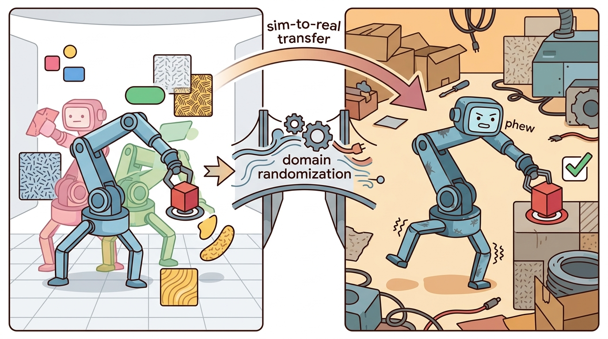

"The right simulator is the one whose wrongness you can afford, measure, and explain."
A Reality-Gap Auditor

This section assumes familiarity with the rigid-body dynamics formalisms covered in section 6.1 and the contact and constraint models explained in section 6.3. The simulator comparison criteria developed here recur in section 13.1, where tool choice directly shapes the domain randomization budget, and are extended in section 17.2, which applies the throughput and GPU-backend criteria to massively parallel reinforcement learning (RL) pipelines.
A team picks MuJoCo because a colleague used it. Six months later, the dexterous manipulation policy they trained refuses to transfer because the contact model was never matched to their real gripper. Simulator choice is not a software preference; it is the first engineering decision in your sim-to-real pipeline, and the wrong choice compounds across every downstream stage. The embodied AI landscape now offers half a dozen serious simulators with genuinely different physics backends, GPU strategies, and sensor models. You will leave this section with a principled scoring rubric, a recency table that names what to avoid, and a hands-on checklist you can run against your own task before committing to any tool.
Choose by task contract, not reputation. For the full criteria and measurement protocol, see section 11.6.
Simulator claims are only meaningful when measured on your robot, your task, your controller frequency, and your observation pipeline. Treat unmatched benchmark numbers as hints, not evidence.
The cross-chapter context for this module is covered in Section 11.7. Here the focus is on applying that context to a principled selection rubric: which simulator fits your task contract, and how to verify that fit before committing.
A common assumption is that the highest-fidelity simulator is the correct choice for every stage. That assumption is wrong. No simulator simultaneously maximizes contact accuracy, GPU throughput, sensor fidelity, and middleware integration. Optimizing one criterion forces tradeoffs on the others. Simulator choice is stage-specific. A compact, high-accuracy simulator suits controller prototyping. A massively parallel GPU backend suits policy training. A ROS 2-integrated tool suits deployment testing. Treating selection as a multi-stage pipeline decision, not a one-time ranking, makes sim-to-real transfer predictable. Figure 11.8B captures this as a five-stage pipeline: task risk sets the weights, every candidate is scored in one shared table, and the top choice is validated against a measured artifact before it is committed.
The Decision Table
The table below is a starting map, not a leaderboard. Use it to choose which tools deserve a task-level comparison, then measure those tools on the same robot, task, controller frequency, observation pipeline, and validation script.
| Primary need | Start with | Second option | Reason |
|---|---|---|---|
| Small contact-control experiment | MuJoCo | Drake | Fast, readable, strong dynamics loop |
| JAX-native parallel RL | MJX | Brax or MuJoCo | JAX transformations and batched state are central |
| NVIDIA GPU MuJoCo-style throughput | MuJoCo Warp | Newton | Warp backend targets NVIDIA acceleration |
| USD (Universal Scene Description, Pixar's file format for describing 3D scenes) and sensor-rich robot learning | Isaac Lab | Newton or Genesis | Isaac Lab connects physics, rendering, sensors, and learning workflows |
| Emerging Warp and OpenUSD research | Newton | Isaac Lab | Useful when the frontier engine itself is part of the research question |
| Pythonic multi-physics and generated scenes | Genesis | Isaac Lab | Promising for multi-physics, rendering, and generative workflows |
| Model-based control and verification | Drake | MuJoCo | Optimization and analysis are first-class |
| Manipulation benchmark tasks | SAPIEN or ManiSkill | MuJoCo or Isaac Lab | Task suites and manipulation assets matter |
| ROS 2 system integration | Modern Gazebo | Isaac Sim | Middleware, sensors, and controllers dominate the need |
Before any of these candidates earns a spot in your comparison, check that you are naming the tool by its current identity rather than a deprecated predecessor, because the decision table above is only as trustworthy as the recency of the names in it.
Recency And Deprecation Table
| Old or risky default | Current direction | Action |
|---|---|---|
| OpenAI Gym | Gymnasium | Use Gymnasium APIs for new environment work |
| Isaac Gym Preview, IsaacGymEnvs, OmniIsaacGymEnvs, Orbit | Isaac Lab | Migrate new robot-learning projects to Isaac Lab |
| Gazebo Classic | Modern Gazebo | Do not start new projects on Classic after its January 2025 end of life |
| Unverified vendor simulator claims | Task-level benchmark artifact | Reproduce performance and fidelity on your own task |
| One simulator for every stage | Multi-tool pipeline | Train, benchmark, integrate, and verify with fit-for-purpose tools |
Compare simulators on one task configuration, one metric script, and one artifact (this "co-computed" comparison means every candidate is scored from the same run, not stitched together from separate benchmarks). A throughput number from one robot and a fidelity claim from another robot do not form a valid comparison. The comparison artifact should contain every number used in the table, so a reviewer can trace each recommendation back to the same run.
Holding every candidate to that single-artifact standard requires a concrete way to combine many criteria into one number, which is exactly what the weighted rubric below provides.
A Runnable Scoring Rubric
Think of the weighted scoring formula like packing a backpack for a specific hike. Every item (contact accuracy, throughput, sensor fidelity) has its own importance score, but that score only matters relative to today's terrain: a heavy rain jacket earns its weight on a coastal trail yet adds nothing on a desert route. Multiplying each item's usefulness by how much this particular hike demands it, then summing across everything you carry, tells you which kit is genuinely the lightest burden for the actual journey, not for the abstract idea of hiking. The criterion weights in $\mathbf{w}$ do exactly the same work: they encode the terrain of your task so a simulator that excels where you need it most rises to the top even if it scores poorly on criteria your task never stress-tests.
Algorithm: Simulator Selection Decision Checklist
Input: task description $\tau$, candidate simulator set $\mathcal{S} = \{s_1, \ldots, s_n\}$, criterion weight vector $\mathbf{w} \in \mathbb{R}^k$ with $\sum_i w_i = 1$
Output: ranked simulator list with primary recommendation $s^*$ and fallback $s^\dagger$, plus validation artifact path $\alpha^*$
- State the dominant physical risk for $\tau$: contact fidelity, throughput, sensor fidelity, model-based control, or middleware integration. Record it as $\rho \in \{\text{contact}, \text{throughput}, \text{sensor}, \text{control}, \text{integration}\}$.
- Set the weight vector $\mathbf{w}$ so the component matching $\rho$ has the highest entry. Confirm $\sum_i w_i = 1$.
- For each $s \in \mathcal{S}$, assign integer scores $\theta_{s,j} \in [1,5]$ on each criterion $j$, keeping all $n$ tools in a single table so comparisons are co-computed (the "One Config, One Comparison" callout below defines exactly what co-computed requires).
- Compute the weighted score: $\pi(s) = \sum_{j=1}^{k} w_j \cdot \theta_{s,j}$ for every candidate $s \in \mathcal{S}$.
- Rank candidates by $\pi(s)$; select $s^* = \arg\max_{s} \pi(s)$ and $s^\dagger$ as the next highest.
- Check maintenance currency for $s^*$ and $s^\dagger$: label each as current, frontier, legacy, or deprecated. Reject any deprecated choice unless no current alternative scores within $\nabla = 0.2$ of it.
- Identify or create a validation artifact $\alpha^*$ for $s^*$: a replay log, friction sweep, or sensor-randomization run on $\tau$ that produced the score $\theta_{s^*,\text{validation}}$.
- Write a falsification test (a pre-committed check that a candidate must pass, so the choice can be proven wrong by a specific measurement rather than defended after the fact): specify a measurable threshold on $\tau$ that, if missed, would demote $s^*$ and promote $s^\dagger$.
- If $|\pi(s^*) - \pi(s^\dagger)| < 0.15$, record both as co-primary and plan a direct head-to-head measurement on $\tau$ before committing.
- Save the full table (weights, scores, currency labels, artifact path, falsification test) as one artifact. Never use a recommendation that cannot be traced back to this artifact.
Step-Through: Weighted Scoring for a Tabletop Pushing Task
Trace the rubric with the tabletop pushing weights (contact-dominant): physics_fit 0.35, throughput 0.15, sensor_stack 0.10, integration 0.15, maturity 0.20, validation_evidence 0.05. Score two candidates and compute $\pi(s) = \sum_j w_j \theta_{s,j}$ by hand.
MuJoCo scores (5, 3, 2, 3, 5, 5). Term by term: physics 0.35 x 5 = 1.75; throughput 0.15 x 3 = 0.45; sensor 0.10 x 2 = 0.20; integration 0.15 x 3 = 0.45; maturity 0.20 x 5 = 1.00; validation 0.05 x 5 = 0.25. Sum = 1.75 + 0.45 + 0.20 + 0.45 + 1.00 + 0.25 = 4.10.
Isaac Lab scores (4, 5, 5, 4, 4, 4). Term by term: physics 0.35 x 4 = 1.40; throughput 0.15 x 5 = 0.75; sensor 0.10 x 5 = 0.50; integration 0.15 x 4 = 0.60; maturity 0.20 x 4 = 0.80; validation 0.05 x 4 = 0.20. Sum = 1.40 + 0.75 + 0.50 + 0.60 + 0.80 + 0.20 = 4.25.
Here Isaac Lab edges ahead at 4.25 versus 4.10 because its broad sensor and throughput strengths survive the contact-heavy weighting. Now flip the dominant risk: raise physics_fit to 0.50 and drop throughput and sensor_stack to 0.05 each. MuJoCo climbs to 0.50 x 5 + 0.05 x 3 + 0.05 x 2 + 0.15 x 3 + 0.20 x 5 + 0.05 x 5 = 2.50 + 0.15 + 0.10 + 0.45 + 1.00 + 0.25 = 4.45, while Isaac Lab falls to 2.00 + 0.25 + 0.25 + 0.60 + 0.80 + 0.20 = 4.10. The winner flips with one weight change: that single number, not the tool's reputation, decided the outcome.
Code Fragment 1 turns simulator choice into a co-computed, one-artifact decision, which means all tools are scored on the same criteria in one run. This prevents invalid number-by-number comparisons across configurations. The scale cost can be substantial: teams that have reported choosing a simulator on unmatched vendor benchmarks typically discover the contact-model mismatch only after training, forcing a retrain that can cost on the order of weeks of GPU time, whereas a short contact-sweep comparison run first can catch the same mismatch in under an hour. The cost compounds at the rollout level too: verifying contact calibration before training may need only on the order of hundreds of targeted friction-sweep episodes, whereas finding the same mismatch after training can force a rerun of tens of thousands of policy episodes.
# Score simulators on one task using one rubric and one config.
# Higher is better, but the weights must match the task.
# This avoids mixing metrics from different experiments.
weights = {
"physics_fit": 0.30,
"throughput": 0.20,
"sensor_stack": 0.15,
"integration": 0.15,
"maturity": 0.15,
"validation_evidence": 0.05,
}
scores = {
"MuJoCo": {
"physics_fit": 5,
"throughput": 3,
"sensor_stack": 2,
"integration": 3,
"maturity": 5,
"validation_evidence": 5,
},
"Isaac Lab": {
"physics_fit": 4,
"throughput": 5,
"sensor_stack": 5,
"integration": 4,
"maturity": 4,
"validation_evidence": 4,
},
"Drake": {
"physics_fit": 4,
"throughput": 2,
"sensor_stack": 2,
"integration": 3,
"maturity": 5,
"validation_evidence": 5,
},
"Modern Gazebo": {
"physics_fit": 3,
"throughput": 2,
"sensor_stack": 4,
"integration": 5,
"maturity": 4,
"validation_evidence": 4,
},
}
ranked = sorted(
((name, sum(weights[k] * vals[k] for k in weights)) for name, vals in scores.items()),
key=lambda item: item[1],
reverse=True,
)
for name, score in ranked:
print(f"{name}: {score:.2f}")Isaac Lab: 4.35 MuJoCo: 3.85 Modern Gazebo: 3.45 Drake: 3.35
Why the Validation Artifact Earns Its Place
A policy that works in simulation but collapses on hardware is not a policy: it is a calibration debt you pay in GPU hours and broken hardware.
A validation artifact matters because simulator contact and friction parameters are not ground truth; they are calibration choices. A policy trained on uncalibrated parameters typically shows a systematic gap once it meets a physical surface: a gripper that never slips in simulation can slip on the real finger pad the first time contact forces exceed what the simulator modeled. The control loop then has no learned recovery, because training never made that failure mode visible. The artifact makes the calibration visible and reversible before you spend any GPU budget at scale.
To build an artifact, run the candidate simulator on one geometric scenario from the real task, log the rollout, and compare a measurable outcome against the physical reference. For contact fidelity, use a friction sweep: load the gripper mesh at three normal-force levels, record slip distance at each, and check it against calipers or a force-plate reading from the real gripper. Save the resulting CSV, log, or JSON beside the scoring table, so every number in the rubric traces to one measured run.
Checkpoint
So far: a validation artifact matters because contact and friction parameters are calibration choices rather than ground truth, a mismatch stays invisible until hardware if it is not measured, and the fix is to build the artifact as one concrete friction-sweep run compared against a physical reference before spending GPU budget at scale.
The scoring script is about 50 lines of decision support, but the bottleneck is rarely the code. The bottleneck is collecting grounded scores: for contact fidelity, run a friction sweep on the actual gripper geometry (Franka Panda fingertip radius 8 mm, nominal friction 0.7) and record slip distance under three load levels. For throughput, run 512 parallel rollouts and measure wall-clock steps per second on the target GPU. For sensor fidelity, compare depth noise on a wrist-mounted RealSense D435 against the simulator's point-cloud model. Tools such as Hydra, Weights and Biases, or plain JSON plus CSV can store the comparison artifact, but measured values from your specific robot replace opinion scores and give the rubric its predictive power for sim-to-real transfer.
Hands-On Lab: Benchmark A Simulator Choice
Objective
Build a reproducible simulator-selection artifact for a reaching, pushing, locomotion, or ROS 2 integration task.
What You'll Practice
- Writing a task-specific simulator rubric
- Co-computing comparable scores in one pass
- Adding a deprecation and maintenance check
- Recording validation evidence instead of preference scores
- Producing an engineering recommendation with a fallback
Setup
The required version uses only Python's standard library. Optional extensions can call MuJoCo, Isaac Lab, ManiSkill, or Gazebo after those tools are installed.
Steps
Work through the steps in order so the final recommendation has a visible chain from task risk to weights, scores, maintenance status, validation evidence, and falsification test.
Step 1: Define The Task
Choose one task and write the dominant risk: contact fidelity, throughput, visual sensors, model-based control, manipulation benchmark coverage, or ROS 2 integration.
task = "tabletop pushing"
dominant_risk = "contact fidelity"
requirements = {"contact fidelity", "asset import", "batch rollout", "camera rendering"}
score = {"MuJoCo": 3, "Isaac Lab": 4, "Genesis": 3}
choice = max(score, key=score.get)
print({"task": task, "dominant_risk": dominant_risk, "recommended_stack": choice})task and dominant_risk, force the recommendation to start from the embodied problem.Hint
If the task fails when objects slip incorrectly, choose contact fidelity. If it fails because training is too slow, choose throughput.
Step 2: Set Weights
Choose weights that match the task. The weights should sum to 1.0 so the final score is interpretable, and one criterion should capture whether the evidence was actually measured on this task.
Hint
A manipulation benchmark usually weights physics and maturity heavily. A synthetic-data task gives more weight to sensors and rendering.
Step 3: Score Candidates
Score at least three simulators from 1 to 5 using the same criteria. Keep the candidates in one table so the comparison is co-computed.
scores = {
"MuJoCo": {
"physics_fit": 5,
"throughput": 3,
"sensor_stack": 2,
"integration": 3,
"maturity": 5,
"validation_evidence": 5,
},
"Isaac Lab": {
"physics_fit": 4,
"throughput": 5,
"sensor_stack": 5,
"integration": 4,
"maturity": 4,
"validation_evidence": 4,
},
"Modern Gazebo": {
"physics_fit": 3,
"throughput": 2,
"sensor_stack": 4,
"integration": 5,
"maturity": 4,
"validation_evidence": 4,
},
}
if isinstance(scores, list):
print({"rows": len(scores), "first": scores[0] if scores else None})
elif isinstance(scores, dict):
print({"fields": sorted(scores), "audit_ready": all(value not in (None, "") for value in scores.values())})
else:
print({"value": scores})Hint
Do not score a tool highly because it is popular. Score it highly because it fits the written task.
Step 4: Rank And Explain
Compute a ranking and print the recommendation with the exact reason.
ranked = sorted(
((name, sum(weights[k] * vals[k] for k in weights)) for name, vals in scores.items()),
key=lambda item: item[1],
reverse=True,
)
print(ranked[0])('MuJoCo', 4.1)ranked list gives both the winner and the fallback candidates for the written recommendation.Hint
If two tools are close, the fallback recommendation is as important as the winner.
Step 5: Add A Currency Check
Add one maintenance note for each candidate: current, frontier, legacy, or deprecated. Then add one validation note that states which evidence artifact supports the score.
currency = {
"MuJoCo": "current",
"Isaac Lab": "current",
"Modern Gazebo": "current",
}
validation_artifacts = {
"MuJoCo": "friction sweep replay",
"Isaac Lab": "camera randomization replay",
"Modern Gazebo": "ROS 2 topic and controller log",
}
def audit_release_support(
currency: dict[str, str], validation_artifacts: dict[str, str]
) -> tuple[dict[str, str], dict[str, str]]:
assert currency.keys() == validation_artifacts.keys()
return currency, validation_artifacts
currency, validation_artifacts = audit_release_support(currency, validation_artifacts)
def audit_release_support(
currency: dict[str, str], validation_artifacts: dict[str, str]
) -> tuple[dict[str, str], dict[str, str]]:
assert currency.keys() == validation_artifacts.keys()
return currency, validation_artifacts
currency, validation_artifacts = audit_release_support(currency, validation_artifacts)
print(currency)
print(validation_artifacts){'MuJoCo': 'current', 'Isaac Lab': 'current', 'Modern Gazebo': 'current'}
{'MuJoCo': 'friction sweep replay', 'Isaac Lab': 'camera randomization replay', 'Modern Gazebo': 'ROS 2 topic and controller log'}currency table keeps recency risk visible, while validation_artifacts prevents the score from becoming unsupported opinion.Hint
Gazebo Classic should be marked legacy or deprecated, while modern Gazebo should be marked current.
Expected Output
The finished lab should output a ranked list, a primary recommendation, a fallback, a currency note, and a validation artifact for each candidate. The written paragraph should explain why the tool fits the task and what experiment would change the decision.
Stretch Goals
- Run the rubric twice: once for training and once for deployment testing.
- Add cost, operating system, and GPU memory columns.
- Replace manual scores with measured throughput from two installed simulators.
Each stretch goal should produce a new comparison artifact, not only a changed recommendation sentence.
Complete Solution
The solution below keeps the task, rubric, evidence note, and falsification test in one reproducible artifact.
# Complete simulator selection rubric for a tabletop pushing task.
# The scores are co-computed with one config so comparisons are valid.
# Replace scores with measured data when tools are installed locally.
task = "tabletop pushing"
dominant_risk = "contact fidelity"
weights = {
"physics_fit": 0.35,
"throughput": 0.15,
"sensor_stack": 0.10,
"integration": 0.15,
"maturity": 0.20,
"validation_evidence": 0.05,
}
scores = {
"MuJoCo": {
"physics_fit": 5,
"throughput": 3,
"sensor_stack": 2,
"integration": 3,
"maturity": 5,
"validation_evidence": 5,
},
"Isaac Lab": {
"physics_fit": 4,
"throughput": 5,
"sensor_stack": 5,
"integration": 4,
"maturity": 4,
"validation_evidence": 4,
},
"Modern Gazebo": {
"physics_fit": 3,
"throughput": 2,
"sensor_stack": 4,
"integration": 5,
"maturity": 4,
"validation_evidence": 4,
},
}
currency = {
"MuJoCo": "current",
"Isaac Lab": "current",
"Modern Gazebo": "current",
}
validation_artifacts = {
"MuJoCo": "friction sweep replay",
"Isaac Lab": "camera randomization replay",
"Modern Gazebo": "ROS 2 topic and controller log",
}
ranked = sorted(
((name, sum(weights[k] * vals[k] for k in weights)) for name, vals in scores.items()),
key=lambda item: item[1],
reverse=True,
)
winner, winner_score = ranked[0]
fallback, fallback_score = ranked[1]
print(f"task: {task}")
print(f"dominant risk: {dominant_risk}")
print(f"recommendation: {winner} ({winner_score:.2f}, {currency[winner]})")
print(f"fallback: {fallback} ({fallback_score:.2f}, {currency[fallback]})")
print(f"evidence: {validation_artifacts[winner]}")
print("falsification test: compare pushing distance under three friction settings")task: tabletop pushing dominant risk: contact fidelity recommendation: MuJoCo (4.10, current) fallback: Isaac Lab (4.00, current) evidence: friction sweep replay falsification test: compare pushing distance under three friction settings
For a pick-and-place project, MuJoCo might win the early controller prototype, ManiSkill might win benchmark comparison, and Isaac Lab might win large-scale policy training with cameras. The correct recommendation can be a pipeline, not a single tool.
Real-World Application: OpenAI's Dactyl Rubik's Cube Hand
OpenAI's Dactyl system trained a Shadow Hand to solve a Rubik's Cube using MuJoCo, chosen precisely because the dominant risk was contact fidelity across many fingertip-object contacts. The team deliberately paired the contact-accurate simulator with aggressive automatic domain randomization to close the remaining sim-to-real gap, exactly the stage-specific tool match this rubric formalizes. Choosing a high-throughput GPU backend first would have optimized the wrong criterion for a dexterous-contact task. In terms of Figure 11.8B, this is stage 1 (identify task risk = contact) driving stage 2 (weights dominated by physics_fit) all the way to a stage-5 recommendation of MuJoCo, exactly the pipeline this section asks you to run on your own task.
A good embodied system makes choosing a simulator visible twice: once in the design sketch and once in the replay artifact. The second view keeps the first one honest.
Can you name the simulator you would use for training, the simulator or stack you would use for integration testing, and the mature baseline you would cite? If not, your tool plan is incomplete.
Repeat the lab for legged locomotion and increase the throughput weight. Then repeat it for ROS 2 deployment testing and increase the integration weight. Explain why the winner changes.
Three active directions are reshaping how researchers choose and combine simulators.
Differentiable and GPU-native physics for policy gradient methods. Simulators that expose analytic gradients through contact allow direct back-propagation from reward to policy parameters, bypassing sample-inefficient Monte Carlo rollouts. Genesis (Xian et al., 2025, "Genesis: A Generative World for General-Purpose Robotics and Embodied AI Learning", arXiv 2501.04722) demonstrates a fully differentiable multi-physics engine running at millions of steps per second on a single GPU, with gradients usable for trajectory optimization and policy learning in the same pass.
Foundation-model-guided automatic domain randomization. Rather than hand-tuning friction, mass, and texture ranges, recent work lets vision-language models propose randomization distributions grounded in real-world image statistics. The RialTo system (Torne et al., 2024, "Reconciling Reality through Simulation: A Real-to-Sim-to-Real Approach for Robust Manipulation", RSS 2024), built by MIT CSAIL on Isaac Sim, reconstructs a real scene as a USD "digital twin" (a simulated replica built to match one specific physical scene's geometry and layout, not a generic asset), randomizes friction and mass around the scanned object, and trains an RL policy that transfers back to a Franka arm with far fewer real demonstrations than imitation learning alone. The takeaway for simulator choice: the randomization budget you set in section 13.1 is itself becoming a learned, scene-grounded quantity rather than a hand-tuned slider.
Cross-simulator validation pipelines and simulator interchange formats. Researchers at the Isaac Lab team and collaborators (Mittal et al., 2024, "Isaac Lab: A Unified and Modular Platform for Robot Learning", arXiv 2301.04195 updated 2024) are converging on USD-based scene description as a common interchange, enabling a policy trained in one backend to be validated in a second simulator before hardware deployment. This direction treats simulator agreement, not single-simulator accuracy, as the fidelity criterion.
Open problem for a PhD student: There is no accepted protocol for measuring when two simulators are "close enough" that a policy trained in one transfers reliably to the other. Developing a falsifiable divergence metric, one that can be computed before a real-robot rollout and that predicts transfer success rate, would fill a concrete gap in the sim-to-real literature.
Simulator choice is an experimental design decision. Match the tool to the dominant risk, compare candidates in one co-computed artifact, and document what would change your mind.
Project Ideas
Beginner (weekend): Simulator scoring dashboard. Build a Python script that reads a YAML file of rubric weights and simulator scores, runs the weighted ranking from this section, and prints a ranked recommendation table with maintenance currency labels. The key challenge is designing the YAML schema so any teammate can add a new simulator row without touching the ranking code, using only Gymnasium and the standard library.
Intermediate (1-2 weeks): Contact-fidelity comparison across two simulators. Set up the same tabletop pushing task in both MuJoCo and PyBullet, run a friction sweep at three normal-force levels in each, log slip distance per trial to CSV, and plot the results alongside a physical reference measurement. The key challenge is keeping the robot model, object geometry, and control loop identical across both simulators so the friction parameter is the only variable, not the task setup.
Intermediate (1-2 weeks): Multi-stage sim-to-real pipeline scaffold. Use MuJoCo for controller prototyping, Isaac Lab for parallel policy training with a Gymnasium-compatible wrapper, and Modern Gazebo with ROS2 for integration testing, connecting all three stages with a shared LeRobot-format replay log. The key challenge is defining a single observation and action schema that each stage can consume without format conversion, so the validation artifact from one stage can be replayed in the next.
Continue to Chapter 12, where simulator choice becomes benchmark choice: what exactly are we measuring, and how do we avoid fooling ourselves?
Google DeepMind. "MuJoCo Documentation."
MuJoCo is the main mature baseline for compact rigid-body robot-learning experiments. Use the docs to verify current APIs, MJX, and MuJoCo Warp options before running comparisons.
Isaac Lab Project. "Isaac Lab Documentation."
Isaac Lab is the current NVIDIA robot-learning framework and a common default for GPU RL and sensor-rich simulation. It is central for readers scaling experiments into thousands of environments.
NVIDIA. "Newton Physics Engine."
Newton represents the emerging Warp and OpenUSD direction for open robot-learning physics. Readers should treat it as a frontier option and validate it against mature baselines.
Open Robotics. "Installing Gazebo With ROS."
This page documents supported ROS and Gazebo combinations. It is especially relevant for system-integration choices because version compatibility can decide whether a simulator plan is practical.
ManiSkill Team. "ManiSkill Documentation."
ManiSkill is the practical bridge from simulator choice to manipulation benchmarks. It helps readers connect SAPIEN-powered simulation to the task-suite discussion in the next chapter.